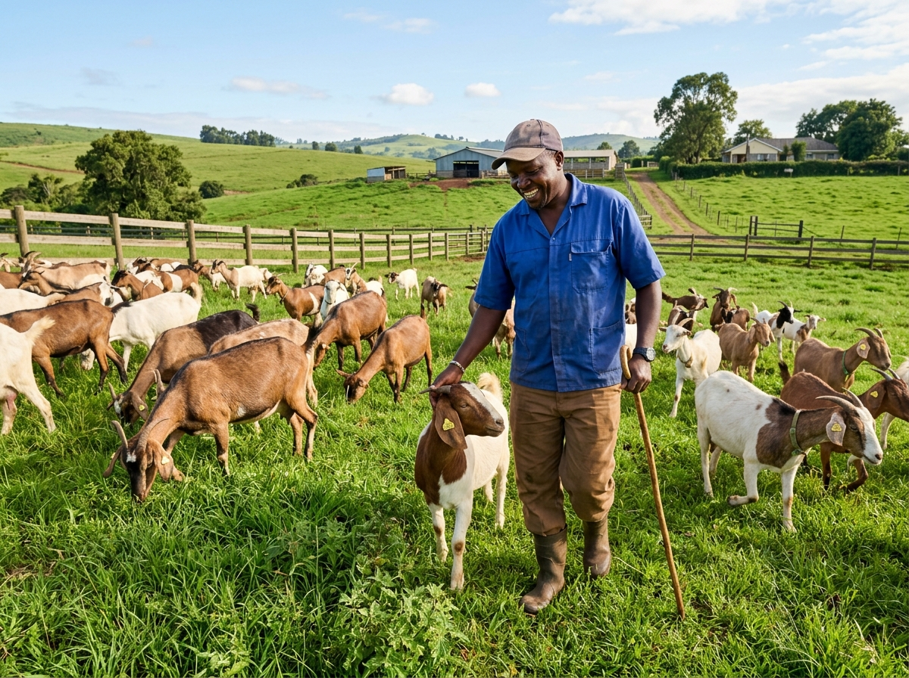
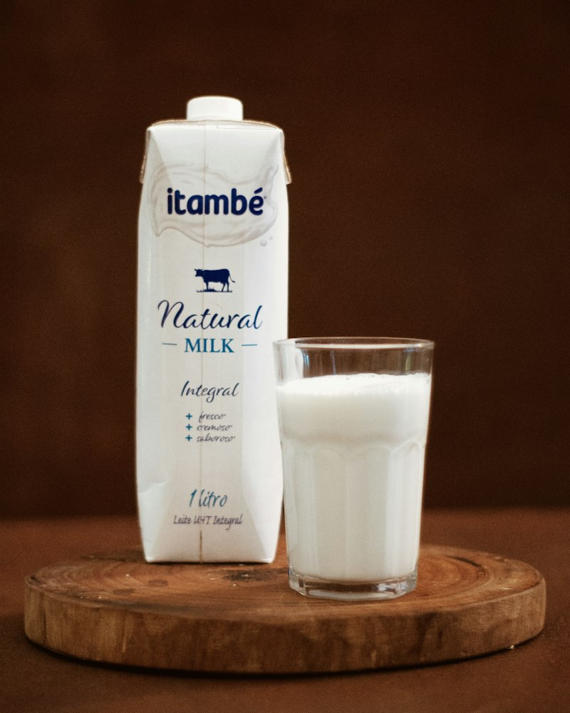

Animal Welfare & Health
Our operations mandate humane handling, unique individual IDs, veterinary vaccination schedules, withdrawal period compliance, and carefully balanced nutrition as the bedrock of animal welfare.
Building a resilient, sustainable food system through humane livestock management, verified lifetime traceability, and resource-efficient regenerative practices.

Practical standards enforced through daily recorded documentation rather than unverified marketing claims.
Our operations mandate humane handling, unique individual IDs, veterinary vaccination schedules, withdrawal period compliance, and carefully balanced nutrition as the bedrock of animal welfare.
Unique non-reusable lifetime animal IDs and documented logs for births, clinical treatments, pasture movements, and feed formulations ensure transparent, auditable origins.
Optimizing daily forage rations, eliminating feed waste, and recycling rich organic goat manure back into rotational pasture fertility closes nutrient loops and reduces environmental footprint.


The Evolex operating roadmap is designed to establish repeatable farm records and proven procedures first, then expand into value-added processing, cold-chain storage, and regional distribution as commercial volumes justify.
This deliberate sequence protects capital, ensures operational discipline precedes asset deployment, and prevents premature scaling before health and yield metrics are proven on the ground.
We provide full audit documentation, biosecurity protocols, and herd history reports upon commercial request.